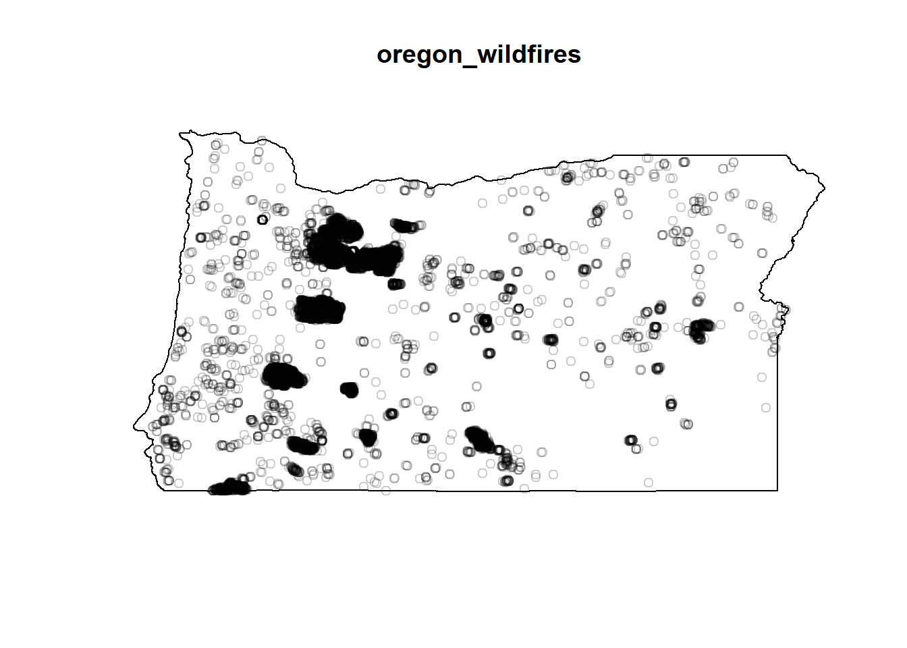
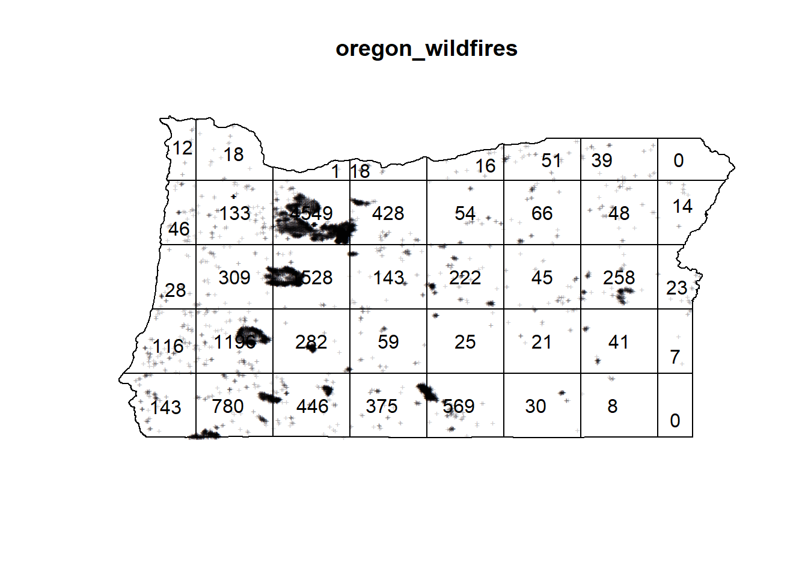
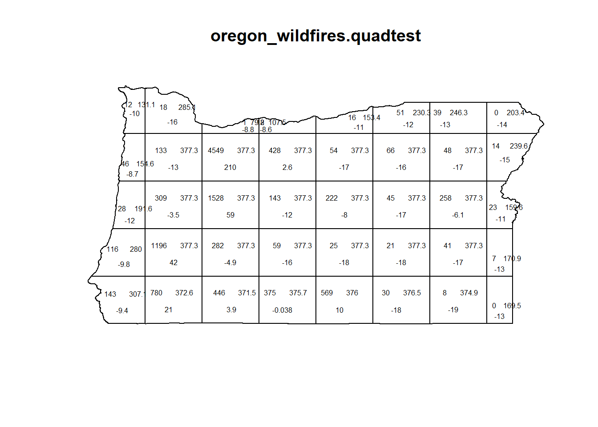

Note: This work was presented as a solution for an open ended homework question for the advanced predictive models course. The objective of the assignment was to identify and visualize a spatial point pattern. The key skill demonstrated here is being able to procure data from a random source, prepare and analyse it in a given context.
A spatial point pattern is a set of events (wildfire locations in this case), irregularly distributed with in a designated region, that can be viewed as being generated by a random mechanism (week 4-lecture slides). Wildfires are considered stochastic, because they’re thought to be a randomly occurring natural phenomenon.
Summer of 2020 was a particularly bad season for wildfires along the west coast, driving the air quality in some cities along the coast to worst in the world for a few days. Read here
I obtained the wildfire data from NASA website for year 2020, collected using the MODIS instrument. The data file was filtered to retain information for the state of interest (i.e. Oregon) only.
df <- read.csv('Data/modis_2020_United_States.csv', header = TRUE)
#retain the subset of the data for the state of Oregon only. Used the bbox limits for the state from the shape file
#for filtering
#need to figure out a better way to do this, because geographic boundary is not a perfect rectangle.
sub_df <- df[which(df$longitude >= -124.70 & df$longitude <= -116.46),]
sub_df <- sub_df[which(sub_df$latitude>=41.99 & sub_df$latitude<=46.299),]The shape file containing boundaries of the state was obtained from USGS (United States Geological Survey) website.
library(rgdal)
x<-readOGR("Data/Shape/GU_StateOrTerritory.shp")
#plot(x)
boundaryPoints=x@polygons[[1]]@Polygons[[1]]@coords
#boundaryPoints
owinBound=owin(poly=data.frame(x=rev(boundaryPoints[,1]), y=rev(boundaryPoints[,2])))
#owinBound
pppData <- ppp(x = sub_df$longitude, y = sub_df$latitude,window=owinBound)
#plot(pppData)
#attr(pppData,"rejects")
oregon_wildfires <- as.ppp(pppData)
plot(oregon_wildfires)
This data represents a non-homogeneous poisson process, which is characterized by
This plot divides the state into a set number of quadrants, and reports the counts per quadrant.Then a chi squared test is run to see if the actual number of fires in a given quadrant matches the expected (predicted) number of fires, under the \(H_0 =\) wildfires arise from a homogeneous poisson process.
# Qudarant plot
Q <- quadratcount(oregon_wildfires,
nx = 8,
ny = 5)
plot(oregon_wildfires,
cex = 0.5,
pch = "+")
plot(Q,
add = TRUE,
cex = 1)
The results from the chi-squared test are shown below. The p-value is very small which indicates that we can reject the null hypothesis $H_0 = $ The data arose from a homogeneous poisson process.
# chi-squared test
# TESTING FOR CSR (chi-squared test)
oregon_wildfires.quadtest <- quadrat.test(oregon_wildfires,
nx = 8,
ny = 5) # how does number of quadrants affect results?
oregon_wildfires.quadtest##
## Chi-squared test of CSR using quadrat counts
##
## data: oregon_wildfires
## X2 = 57658, df = 39, p-value < 2.2e-16
## alternative hypothesis: two.sided
##
## Quadrats: 40 tiles (irregular windows)plot.quadrattest(oregon_wildfires.quadtest,cex = 0.5)
The text in each quadrant represents the actual count(left), expected count(right) and the pearson residuals (bottom)
This analysis was done on a large area, and the model was not controlled for the covariates. A better and more useful analysis would divide the state into smaller regions (by county, possibly). Control for developed (urban) areas vs. forest land. And more importantly, control for covariates (i.e. fire conditions).